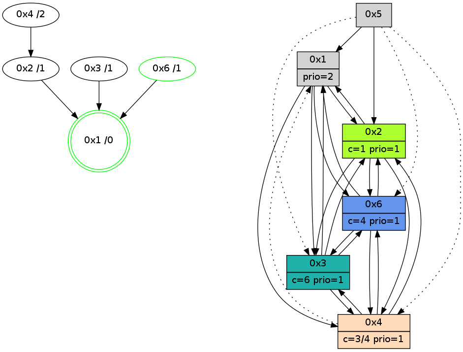

>> << IDX [start] -100 -25 -5 +0 +5 +25 +100 [865.27579999]
 Previous packets
----------------------------------------------------------------------
860.354723 beacon01(adaf) #0 coord=01,02,05,03,04,06 cycle=432.0ms assoc
-- color-indic=1 64 7a 15
860.364684 beacon02(adaf) #0 coord=01,02,05,03,04,06 cycle=432.0ms assoc 64 2b ea
860.374684 beacon05(adaf) #0 coord=01,02,05,03,04,06 cycle=432.0ms assoc 64 8d c0
860.384685 beacon03(adaf) #0 coord=01,02,05,03,04,06 cycle=432.0ms assoc 64 11 e4
860.394645 beacon04(adaf) #0 coord=01,02,05,03,04,06 cycle=432.0ms assoc 64 b7 ce
860.404686 beacon06(adaf) #0 coord=01,02,05,03,04,06 cycle=432.0ms assoc 64 c3 d2
860.416126 [Hello(1): seq=564 sym=2,6 sysInfo=hasWarning,coloring-mode-on,ColoringModeRequestCalled stat=2:1,4,1,0/6:1,1,2,2]
860.418522 [Color(3) seq=60 @0:0 color=6 prio=1 c=1,3,4,5;0,2]
860.420010 [Hello(4): seq=665 sym=2 asym=1,6,3 sysInfo=hasWarning stat=2:14,8,12,2/1:15,7,9,0/6:0,0,1,0/3:3,12,14,3]
860.424381 [STC(1) #0.90 new-neigh,tree-change,inconsistent-stability,stable,to-color d=0]
860.431348 [Hello(6): seq=578 sym=3,1,2 sysInfo=hasWarning,coloring-mode-on,ColoringModeIndicationCalled stat=3:1,3,0,0/1:1,7,10,1/2:9,10,1,0]
----------------------------------------------------------------------
860.846831 beacon01(adaf) #0 coord=01,02,05,03,04,06 cycle=432.0ms assoc
-- color-indic=1 64 be 7a
860.856792 beacon02(adaf) #0 coord=01,02,05,03,04,06 cycle=432.0ms assoc 64 ef 85
860.866793 beacon05(adaf) #0 coord=01,02,05,03,04,06 cycle=432.0ms assoc 64 49 af
860.876794 beacon03(adaf) #0 coord=01,02,05,03,04,06 cycle=432.0ms assoc 64 d5 8b
860.886793 beacon04(adaf) #0 coord=01,02,05,03,04,06 cycle=432.0ms assoc 64 73 a1
860.896793 beacon06(adaf) #0 coord=01,02,05,03,04,06 cycle=432.0ms assoc 64 07 bd
860.908335 [STC(2)->1 #0.90 new-neigh,tree-change,inconsistent-stability,to-color d=1]
860.912459 [Hello(3): seq=663 sym=6,4,1,2 sysInfo=hasWarning stat=6:2,0,1,0/4:0,0,0,0/1:10,15,4,1/2:7,10,2,0]
860.914683 [Color(6) seq=91 @0:0 color=4 prio=1 c=0,1,2,5,6;3]
860.916223 [STC(3)->1 #0.90 new-neigh,tree-change,inconsistent-stability,stable,to-color d=1]
860.919133 [Color(1) seq=91 @0:0 prio=2 c=1,4,6;0,2,3,5]
----------------------------------------------------------------------
861.338938 beacon01(adaf) #0 coord=01,02,05,03,04,06 cycle=432.0ms assoc
-- color-indic=1 64 f2 ca
861.348899 beacon02(adaf) #0 coord=01,02,05,03,04,06 cycle=432.0ms assoc 64 a3 35
861.358900 beacon05(adaf) #0 coord=01,02,05,03,04,06 cycle=432.0ms assoc 64 05 1f
861.368900 beacon03(adaf) #0 coord=01,02,05,03,04,06 cycle=432.0ms assoc 64 99 3b
861.378900 beacon04(adaf) #0 coord=01,02,05,03,04,06 cycle=432.0ms assoc 64 3f 11
861.388902 beacon06(adaf) #0 coord=01,02,05,03,04,06 cycle=432.0ms assoc 64 4b 0d
861.400031 [Hello(1): seq=565 sym=2,6 sysInfo=hasWarning,coloring-mode-on,ColoringModeRequestCalled stat=2:1,4,1,0/6:2,1,2,2]
861.402426 [Color(3) seq=61 @0:0 color=6 prio=1 c=1,3,4,5;0,2]
861.404229 [Hello(2): seq=1154 sym=6,1,3 sysInfo=hasWarning stat=6:6,11,1,4/1:3,6,3,0/3:1,3,1,0]
861.406035 [Hello(6): seq=579 sym=3,1,2 sysInfo=hasWarning,coloring-mode-on,ColoringModeIndicationCalled stat=3:1,3,1,0/1:1,8,10,1/2:9,10,1,0]
861.409872 [Hello(4): seq=666 sym=2 asym=1,6,3 sysInfo=hasWarning stat=2:14,8,13,2/1:15,8,10,0/6:1,1,1,0/3:3,12,15,3]
861.412758 [STC(4)->2-.->1 #0.90 to-color d=2]
----------------------------------------------------------------------
861.831046 beacon01(adaf) #0 coord=01,02,05,03,04,06 cycle=432.0ms assoc
-- color-indic=1 64 36 a5
861.841006 beacon02(adaf) #0 coord=01,02,05,03,04,06 cycle=432.0ms assoc 64 67 5a
861.851006 beacon05(adaf) #0 coord=01,02,05,03,04,06 cycle=432.0ms assoc 64 c1 70
861.861008 beacon03(adaf) #0 coord=01,02,05,03,04,06 cycle=432.0ms assoc 64 5d 54
861.871008 beacon04(adaf) #0 coord=01,02,05,03,04,06 cycle=432.0ms assoc 64 fb 7e
861.881008 beacon06(adaf) #0 coord=01,02,05,03,04,06 cycle=432.0ms assoc 64 8f 62
861.892689 [Color(1) seq=92 @0:0 prio=2 c=1,4,6;0,2,3,5]
861.896468 [Hello(3): seq=664 sym=6,4,2 asym=1 sysInfo=hasWarning stat=6:3,0,1,0/4:1,0,1,0/2:8,10,2,0/1:11,0,4,1]
861.898933 [Color(6) seq=92 @0:0 color=4 prio=1 c=0,1,2,5,6;3]
----------------------------------------------------------------------
862.323153 beacon01(adaf) #0 coord=01,02,05,03,04,06 cycle=432.0ms assoc
-- color-indic=1 64 7b a2
862.333115 beacon02(adaf) #0 coord=01,02,05,03,04,06 cycle=432.0ms assoc 64 2a 5d
862.343116 beacon05(adaf) #0 coord=01,02,05,03,04,06 cycle=432.0ms assoc 64 8c 77
862.353114 beacon03(adaf) #0 coord=01,02,05,03,04,06 cycle=432.0ms assoc 64 10 53
862.363114 beacon04(adaf) #0 coord=01,02,05,03,04,06 cycle=432.0ms assoc 64 b6 79
862.373115 beacon06(adaf) #0 coord=01,02,05,03,04,06 cycle=432.0ms assoc 64 c2 65
862.384004 [Hello(1): seq=566 sym=2,4,3,6 sysInfo=hasWarning,coloring-mode-on,ColoringModeRequestCalled stat=2:2,4,1,0/4:0,0,1,0/3:0,0,0,0/6:3,2,2,2]
862.386685 [Color(3) seq=62 @0:0 color=6 prio=1 c=1,3,4,5;0,2]
862.388487 [Hello(4): seq=667 sym=2,3 asym=1,6 sysInfo=hasWarning stat=2:14,8,13,2/3:4,12,15,3/1:15,9,10,0/6:1,2,1,0]
862.393910 [Hello(6): seq=580 sym=3,4,1,2 sysInfo=hasWarning,coloring-mode-on,ColoringModeIndicationCalled stat=3:1,3,1,0/4:0,0,1,0/1:1,8,10,1/2:9,10,1,0]
----------------------------------------------------------------------
862.815261 beacon01(adaf) #0 coord=01,02,05,03,04,06 cycle=432.0ms assoc
-- color-indic=1 64 bf cd
862.825222 beacon02(adaf) #0 coord=01,02,05,03,04,06 cycle=432.0ms assoc 64 ee 32
862.835222 beacon05(adaf) #0 coord=01,02,05,03,04,06 cycle=432.0ms assoc 64 48 18
862.845223 beacon03(adaf) #0 coord=01,02,05,03,04,06 cycle=432.0ms assoc 64 d4 3c
862.855223 beacon04(adaf) #0 coord=01,02,05,03,04,06 cycle=432.0ms assoc 64 72 16
862.865224 beacon06(adaf) #0 coord=01,02,05,03,04,06 cycle=432.0ms assoc 64 06 0a
862.876982 [Hello(3): seq=665 sym=6,4,1,2 sysInfo=hasWarning stat=6:4,1,1,0/4:1,0,1,0/1:12,0,4,1/2:8,10,2,0]
862.879263 [STC(1) #0.91 new-neigh,tree-change,inconsistent-stability,stable,to-color d=0]
862.881396 [Color(6) seq=93 @0:0 color=4 prio=1 c=0,1,2,5,6;3]
862.885507 [Color(1) seq=93 @0:0 prio=2 c=1,4,6;0,2,3,5]
----------------------------------------------------------------------
863.307369 beacon01(adaf) #0 coord=01,02,05,03,04,06 cycle=432.0ms assoc
-- color-indic=1 64 f3 7d
863.317331 beacon02(adaf) #0 coord=01,02,05,03,04,06 cycle=432.0ms assoc 64 a2 82
863.327330 beacon05(adaf) #0 coord=01,02,05,03,04,06 cycle=432.0ms assoc 64 04 a8
863.337331 beacon03(adaf) #0 coord=01,02,05,03,04,06 cycle=432.0ms assoc 64 98 8c
863.347330 beacon04(adaf) #0 coord=01,02,05,03,04,06 cycle=432.0ms assoc 64 3e a6
863.357332 beacon06(adaf) #0 coord=01,02,05,03,04,06 cycle=432.0ms assoc 64 4a ba
863.368891 [STC(3)->1 #0.91 to-color d=1]
863.372719 [Hello(4): seq=668 sym=2,6,3 asym=1 sysInfo=hasWarning stat=2:14,8,13,2/6:2,3,1,0/3:5,12,15,3/1:15,10,11,0]
863.374622 [Hello(2): seq=1156 sym=6,4,1,3 sysInfo=hasWarning stat=6:8,13,1,4/4:0,0,1,0/1:3,8,4,0/3:3,3,1,0]
863.377749 [STC(2)->1 #0.91 new-neigh,tree-change,inconsistent-stability,to-color d=1]
----------------------------------------------------------------------
863.799478 beacon01(adaf) #0 coord=01,02,05,03,04,06 cycle=432.0ms assoc
-- color-indic=1 64 37 12
863.809438 beacon02(adaf) #0 coord=01,02,05,03,04,06 cycle=432.0ms assoc 64 66 ed
863.819441 beacon05(adaf) #0 coord=01,02,05,03,04,06 cycle=432.0ms assoc 64 c0 c7
863.829439 beacon03(adaf) #0 coord=01,02,05,03,04,06 cycle=432.0ms assoc 64 5c e3
863.839440 beacon04(adaf) #0 coord=01,02,05,03,04,06 cycle=432.0ms assoc 64 fa c9
863.849441 beacon06(adaf) #0 coord=01,02,05,03,04,06 cycle=432.0ms assoc 64 8e d5
863.860978 [STC(4)->2-.->1 #0.91 new-neigh,tree-change,inconsistent-stability,to-color d=2]
863.863065 [Color(6) seq=94 @0:0 color=4 prio=1 c=0,1,2,5,6;3]
863.864781 [Hello(3): seq=666 sym=6,4,1,2 sysInfo=hasWarning stat=6:4,2,1,0/4:1,0,1,0/1:12,1,5,1/2:9,10,3,0]
863.870505 [Color(1) seq=94 @0:0 prio=2 c=1,4,6;0,2,3,5]
----------------------------------------------------------------------
864.291586 beacon01(adaf) #0 coord=01,02,05,03,04,06 cycle=432.0ms assoc
-- color-indic=1 64 69 73
864.301546 beacon02(adaf) #0 coord=01,02,05,03,04,06 cycle=432.0ms assoc 64 38 8c
864.311547 beacon05(adaf) #0 coord=01,02,05,03,04,06 cycle=432.0ms assoc 64 9e a6
864.321548 beacon03(adaf) #0 coord=01,02,05,03,04,06 cycle=432.0ms assoc 64 02 82
864.331547 beacon04(adaf) #0 coord=01,02,05,03,04,06 cycle=432.0ms assoc 64 a4 a8
864.341548 beacon06(adaf) #0 coord=01,02,05,03,04,06 cycle=432.0ms assoc 64 d0 b4
864.353258 [Hello(4): seq=669 sym=2,6,3 asym=1 sysInfo=hasWarning stat=2:15,8,14,2/6:2,4,1,0/3:6,12,15,3/1:15,11,11,0]
864.356966 [Hello(6): seq=582 sym=3,4,1,2 sysInfo=hasWarning,coloring-mode-on,ColoringModeIndicationCalled stat=3:2,3,1,0/4:0,0,2,0/1:1,10,10,1/2:10,10,2,0]
864.364226 [Hello(1): seq=568 sym=2,4,3,6 sysInfo=hasWarning,coloring-mode-on,ColoringModeRequestCalled stat=2:3,4,1,0/4:0,0,1,0/3:0,1,0,0/6:4,2,2,2]
----------------------------------------------------------------------
864.783693 beacon01(adaf) #0 coord=01,02,05,03,04,06 cycle=432.0ms assoc
-- color-indic=1 64 ad 1c
864.793654 beacon02(adaf) #0 coord=01,02,05,03,04,06 cycle=432.0ms assoc 64 fc e3
864.803655 beacon05(adaf) #0 coord=01,02,05,03,04,06 cycle=432.0ms assoc 64 5a c9
864.813655 beacon03(adaf) #0 coord=01,02,05,03,04,06 cycle=432.0ms assoc 64 c6 ed
864.823655 beacon04(adaf) #0 coord=01,02,05,03,04,06 cycle=432.0ms assoc 64 60 c7
864.833656 beacon06(adaf) #0 coord=01,02,05,03,04,06 cycle=432.0ms assoc 64 14 db
864.845365 [Hello(3): seq=667 sym=6,4,1,2 sysInfo=hasWarning stat=6:5,2,1,0/4:2,0,1,0/1:13,2,5,1/2:9,10,3,0]
864.849811 [Color(6) seq=95 @0:0 color=4 prio=1 c=0,1,2,5,6;3]
864.854261 [Color(1) seq=95 @0:0 prio=2 c=1,4,6;0,2,3,5]